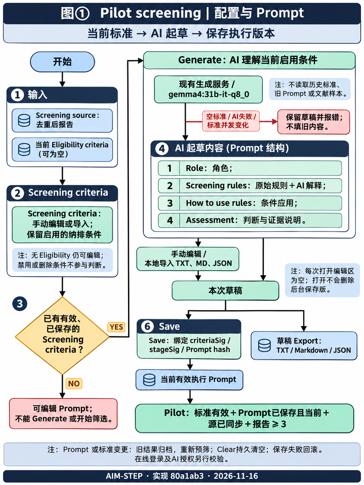
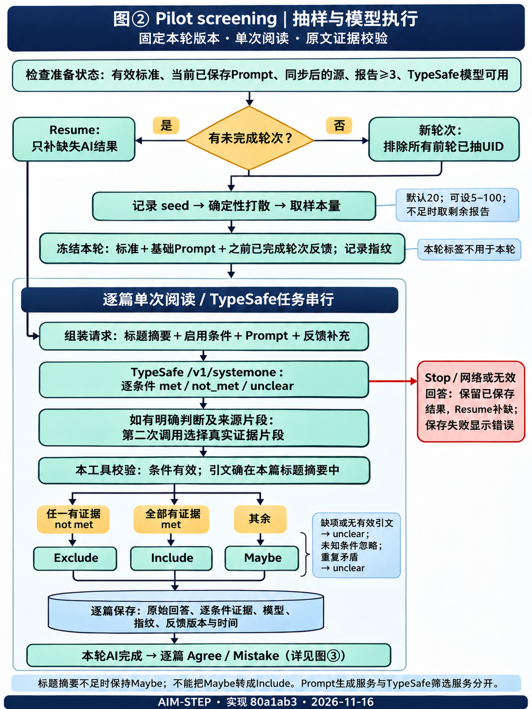
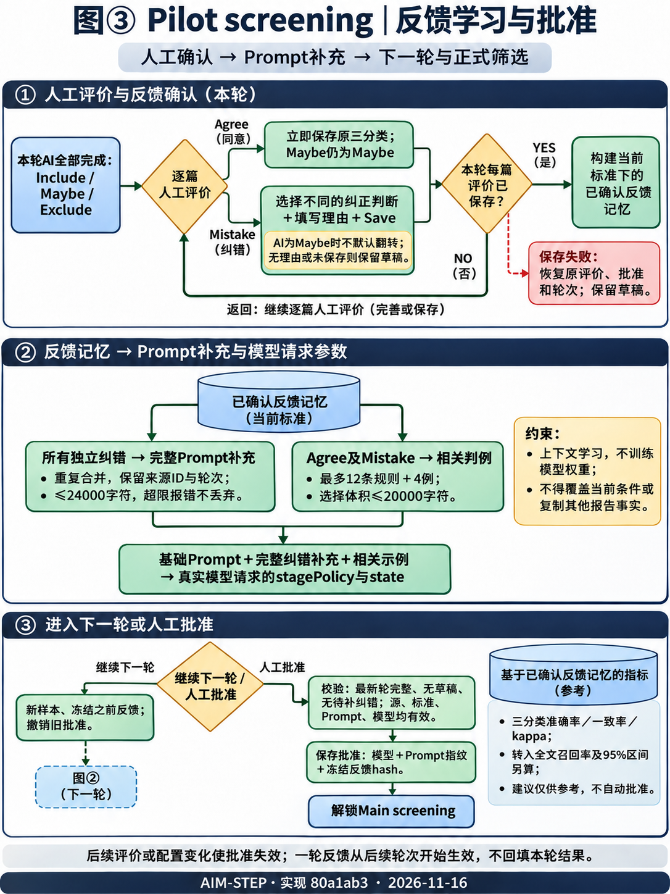
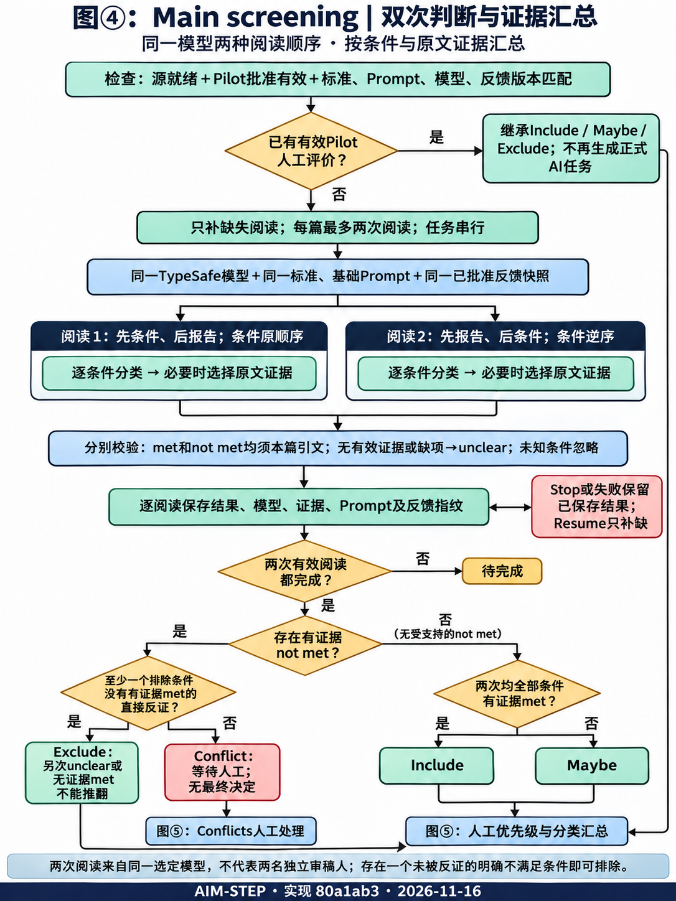
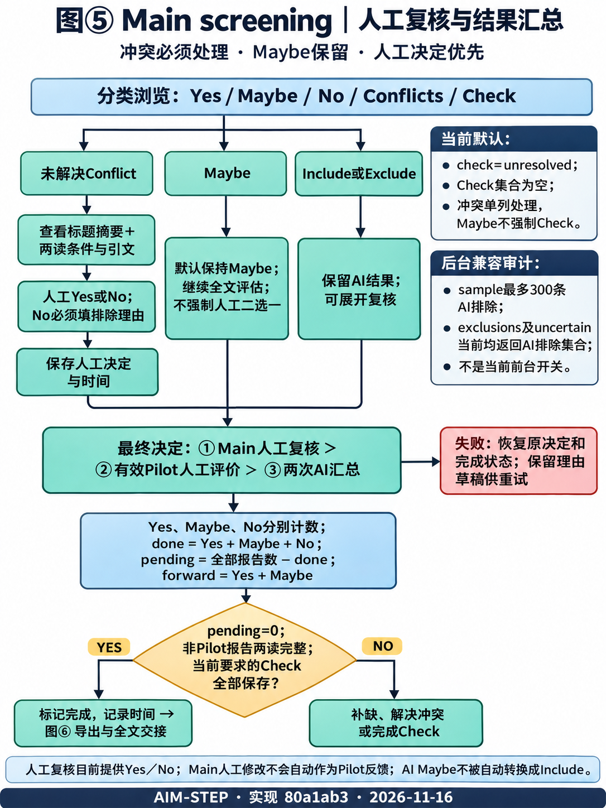
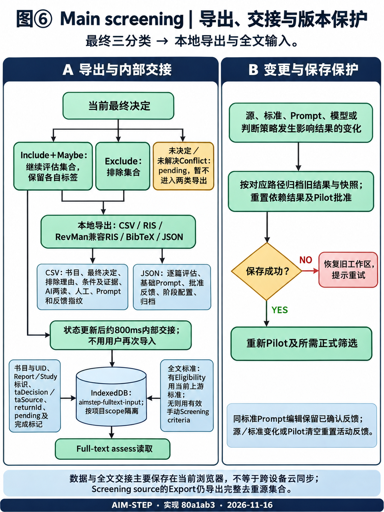

Pilot screening 与 Main screening 技术流程图
按 1–6 阅读：前 3 张为 Pilot，后 3 张为 Main。点击图片或“打开原图／放大”查看高清图；手机可双指放大。每图下方可展开文字技术细节及代码依据，无需安装 Mermaid。
查看 Screening source 四张图 · GitHub 技术路线图档案
下载全部六张图片、文字细节与可编辑源码（ZIP）1. Pilot screening｜配置与 Prompt
当前标准、独立编辑、AI 四部分起草、保存与版本保护。


技术细节与代码依据（文字版）
| 标准来源 | Eligibility 可以为空。Screening criteria 可以独立添加、编辑、导入；实际筛选只使用有效且启用的条件。旧检索快照、已删除或禁用的条件不回填。 |
|---|---|
| AI 生成 | Generate 调用现有生成服务理解当前 Screening criteria。生成输入不包含历史标准、旧 Prompt、研究元数据或待筛文献；当前配置的生成模型是 gemma4:31b-it-q8_0。 |
| 四部分内容 | 角色 Role；原始规则与 AI 解释 Screening rules；规则应用 How to use the rules；判断与证据 Assessment instructions。响应检查条件 ID、完整性、长度和标准版本。 |
| 编辑与保存 | 每次打开编辑区为空，但后台保存版仍存在。Generate、手工输入和 TXT/MD/JSON 导入都先形成草稿；Save 才应用。Export 导出本次草稿。 |
| 版本保护 | 保存版绑定 criteriaSig、stageSig、文本 hash 和来源。AI 失败或并发标准变化时保留草稿并报错；Clear 持久清空。已有结果受 Prompt 变化影响时归档、撤销批准并重新预筛。 |
对应函数：screeningStagesReady / currentScreeningPrompt / generateScreeningPromptDraft / saveScreeningPrompt。查看该版本页面代码 · 反馈记忆代码 · 连接器源码。运行中旧连接器可通过 stagePolicy 兼容路径接收 Prompt 与反馈；源码版本不等于当前常驻进程已重启。
2. Pilot screening｜抽样与模型执行
不重复抽样、本轮冻结、TypeSafe 两阶段调用、三分类证据门控与续跑。


技术细节与代码依据（文字版）
| 启动与样本量 | 有效标准、当前保存 Prompt、同步源、至少 3 条源记录、可用 TypeSafe 模型。每轮样本默认 20，可设 5–100；剩余不足时取剩余记录。3 是源入口下限，不是抽样设置下限。 |
|---|---|
| 可复现的不重复抽样 | 排除所有前轮已抽 UID。保存 seed；根据 seed 与 UID 的 fingerprint 排序后取样。Resume 沿用原样本和反馈快照，绕过重新抽样。 |
| 冻结与请求 | 每轮冻结先前完整轮次的反馈；本轮标签不用于本轮推断。TypeSafe 任务并发为 1。请求包含本篇标题摘要、启用条件、基础 Prompt、完整纠错补充和相关示例。 |
| 真实接口 | TypeSafe /v1/systemone 是结构化 choice 接口。第一次逐条件分类；有明确判断和可用文本片段时，第二次从本篇实际来源片段中选证据或 none。片段按句切分，长句再分为至多 450 字符的片段。 |
| 三分类证据门控 | met 与 not met 均须有效本篇引文。校验忽略大小写与连续空白差异；引文须存在于标题或摘要。遗漏条件为 unclear，未知条件忽略，相互矛盾的有证据重复判断为 unclear。任一有证据 not met → Exclude；全部有证据 met → Include；其余 → Maybe。 |
| 保存和续跑 | 逐篇保存模型、解析模型、条件与证据、原始回答、时间、Prompt 和反馈指纹。Stop 或失败后保留已保存结果；Resume 补缺。引文存在性校验不等于语义正确性证明，仍需 Pilot 人工检查。 |
对应函数：readySource / pilotSample / startPilotRound / screenPilotRecord / pilotDecision。查看该版本页面代码 · 反馈记忆代码 · 连接器源码。运行中旧连接器可通过 stagePolicy 兼容路径接收 Prompt 与反馈；源码版本不等于当前常驻进程已重启。
3. Pilot screening｜反馈学习与批准
人工纠错、完整 Prompt 补充、相关示例、三分类统计、批准和正式筛选入口。


技术细节与代码依据（文字版）
| 人工评价 | Agree 保留原三分类。Mistake 必须选择不同判断并填写理由；AI 为 Maybe 时不默认翻转。判断、理由、AI 结果签名和时间一并保存；失败恢复原状态并保留草稿。 |
|---|---|
| 何时学习 | 只有当前标准下已完成且评价保存有效的轮次进入记忆。未保存、未完成轮次和过期评价不进入下一轮；一轮反馈不会倒灌到本轮已经完成的 AI 判断。 |
| 完整补充与相关示例 | 每条独立纠错进入 pilot-feedback-prompt-v1 补充，同文去重并保留来源 ID 与轮次。Agree 作为确认判例进入记忆；按报告相关性选最多 12 条规则及 4 个示例，选择体积最多 20,000 字符。完整纠错补充不受例数限制；超过 24,000 字符则明确报错要求整理，不静默丢弃。 |
| 如何送入 LLM | 基础 Prompt 与纠错补充进入真实 stagePolicy；反馈规则、示例和补充版本元数据进入 state。旧连接器也在两阶段传递 stagePolicy；结果记录 structured-prompt 或 stage-policy 的实际基础 Prompt 传递路径。 |
| 约束和统计 | 这是上下文学习，不训练模型权重。反馈只解释当前条件，不能新增阈值或复制他篇事实。准确率、一致率和 kappa 区分 Include/Maybe/Exclude；转入全文召回率另以 Include+Maybe 为继续评估并给出 Wilson 95% 区间。 |
| 批准与下一轮 | 最新轮须全部 AI 完成、人工评价保存、无草稿及待补纠错、源和版本当前。指标建议不自动批准；参考条件是无假排除，且 kappa≥0.6 或一致率≥0.75。人工批准冻结模型、Prompt 和反馈快照；新轮或后续评价改变会撤销批准。 |
对应函数：savePilotReview / currentCalibration / pilotMetrics / approvePilotRound / pilotApprovalValid；app/screening-calibration.js。查看该版本页面代码 · 反馈记忆代码 · 连接器源码。运行中旧连接器可通过 stagePolicy 兼容路径接收 Prompt 与反馈；源码版本不等于当前常驻进程已重启。
4. Main screening｜双次判断与证据汇总
有效 Pilot 评价继承、同一模型两次阅读、逐条件归一化与冲突判定。


技术细节与代码依据（文字版）
| 正式筛选入口 | Pilot 批准必须仍匹配源、标准、Prompt、模型及反馈版本。已具有效 Pilot 人工评价的报告直接继承决定，不再进入正式 AI 队列。 |
|---|---|
| 两次阅读 | 阅读 1 先条件后报告、条件原顺序；阅读 2 先报告后条件、条件逆序。两者使用同一选定 TypeSafe 模型、同一标准、基础 Prompt 和已批准反馈快照。它们不是两个独立模型或独立评审者。 |
| 每读两阶段 | 每次阅读都有逐条件分类，必要时再选择证据；每篇最多两读、最多四次 systemone 调用。工具对每读再次校验当前条件和本篇引文，逐读保存。Resume 仅补缺失阅读。 |
| 排除与冲突 | 只要存在一个有证据 not met，且该条件没有有证据 met 直接反证，就汇总为 Exclude，即使另一条件有争议。若每个有证据排除条件都有直接反证，则为 Conflict，等待人工。无证据 met 或 unclear 不能推翻有证据排除。 |
| 纳入与不确定 | 没有有证据 not met 时，两读均为全部有证据 met 才是 Include；其余为 Maybe。只完成一读仍待完成。Conflict 在人工处理前没有最终决定。 |
对应函数：runFull / fullAI / fullAI2 / unmetCriteria / aiPair。查看该版本页面代码 · 反馈记忆代码 · 连接器源码。运行中旧连接器可通过 stagePolicy 兼容路径接收 Prompt 与反馈；源码版本不等于当前常驻进程已重启。
5. Main screening｜人工复核与结果汇总
冲突处理、Maybe 保留、有效人工决定优先级、分类浏览与完成条件。


技术细节与代码依据（文字版）
| 分类浏览 | Yes、Maybe、No 显示最终三分类；Conflicts 单独列出真实冲突，Check 列出当前审计策略要求的记录。可展开标题摘要、逐条件依据和两读结果。 |
|---|---|
| 人工复核 | Main 当前提供 Yes/No；选 No 必须填写排除理由。人工结果保存后覆盖该报告的 AI 或 Pilot 决定；失败恢复原决定、完成状态并保留草稿。Main 人工修改不会自动加入 Pilot 的学习记忆。 |
| 最终决定优先级 | Main 人工复核 ＞ 有效 Pilot 人工评价 ＞ 两次 AI 汇总。无人工解决的 Conflict 保持 pending。默认 Maybe 原样继续全文，不要求人为改成 Include 或 Exclude。 |
| 默认 Check | 当前 check=unresolved 时 checkIds 返回空集合。冲突单列处理；Maybe 不强制 Check。界面没有审计策略切换开关。 |
| 后台兼容策略 | 历史保存的 sample 在全部两读完成后，按标准和 UID 的确定性排序取最多 300 条 AI 排除；exclusions 与 uncertain 当前均返回 AI 排除集合。uncertain 的名称不代表代码会把 Maybe 加入 Check。 |
| 汇总和完成 | done=Yes+Maybe+No；pending=源记录数−done；forward=Yes+Maybe。完成要求源非空、pending=0、所有非 Pilot 报告两读完整、当前 Check 全部保存。记录 completedAt；只有满足要求才对下阶段标记完成。 |
对应函数：castFullVote / finalDecision / checkIds / summary / maybeComplete。查看该版本页面代码 · 反馈记忆代码 · 连接器源码。运行中旧连接器可通过 stagePolicy 兼容路径接收 Prompt 与反馈；源码版本不等于当前常驻进程已重启。
6. Main screening｜导出、全文交接与版本保护
继续评估集合、排除集合、导出证据、IndexedDB 内部交接及归档保护。


技术细节与代码依据（文字版）
| 导出集合 | include 选项实际导出 Include+Maybe，即所有继续评估的报告，保留原始决定；exclude 导出 Exclude。未决定或未解决 Conflict 不进入这两类结果集合。Screening source 的 Export 仍导出完整去重源集合。 |
|---|---|
| 格式与字段 | CSV、RIS、RevMan 兼容 RIS、BibTeX、JSON。RevMan 选项是 RIS 兼容文件，不是 RevMan XML。CSV 包括最终决定、排除理由、条件、引文、两读、人工及指纹；JSON 还包括 Prompt、阶段配置、批准反馈与 Prompt/判断策略归档。 |
| 内部交接 | 状态变化后约 800ms 去抖写入 aimstep-fulltext-input 的 projects 对象仓库，按 scope 隔离。不需用户下载再上传；只传 Include+Maybe，并携带 taDecision、taSource、returnId、pending 和完成标记。 |
| 全文标准 | 存在当前 Eligibility 条件时传递原上游标准；无有效上游条件时，用有效手动 Screening criteria 作为全文初始输入。Report/Study 标识和书目信息同时保留。 |
| 变更与回滚 | 源、标准、Prompt、模型或判断策略更新按对应路径归档并使依赖结果或批准失效。保存失败回滚；同标准 Prompt 编辑保留已确认反馈，源或标准变化、明确 Pilot 清空则重置活动反馈。不同变更使用不同档案字段，不能将一张图当作所有路径完全相同的声明。 |
| 存储边界 | 项目元数据和登录可使用云服务，但本流程的文献记录、上传全文及内部交接主要保存在当前浏览器 IndexedDB。图中交接不代表跨设备自动同步。 |
对应函数：selectedExportRecords / exportResults / publishForFullText / syncSource / syncDecisionPolicy。查看该版本页面代码 · 反馈记忆代码 · 连接器源码。运行中旧连接器可通过 stagePolicy 兼容路径接收 Prompt 与反馈；源码版本不等于当前常驻进程已重启。
这些图描述实现 80a1ab3 的实际流程。完整 Prompt 补充属于上下文学习；不训练模型权重。两次阅读使用同一选定模型。Maybe 保留并继续全文；未解决冲突保持 pending。图像用于阅读，文字细节、可编辑源码及对应代码用于核对精确逻辑；合成测试不代表真实综述筛选性能。